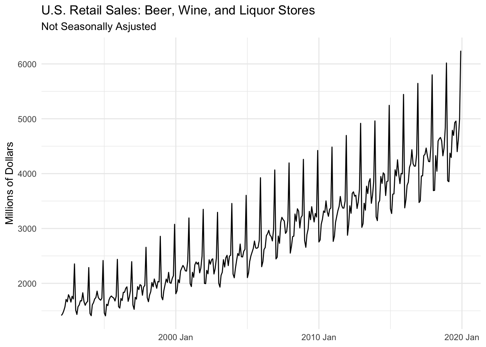
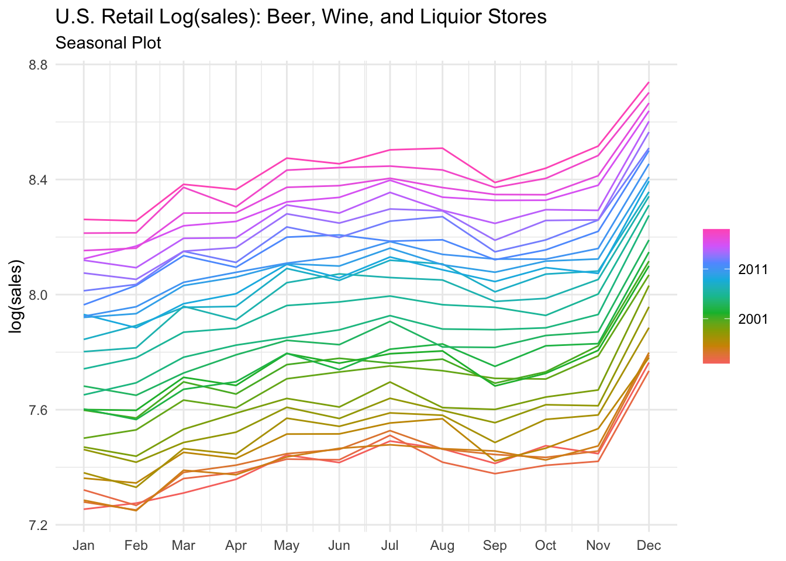
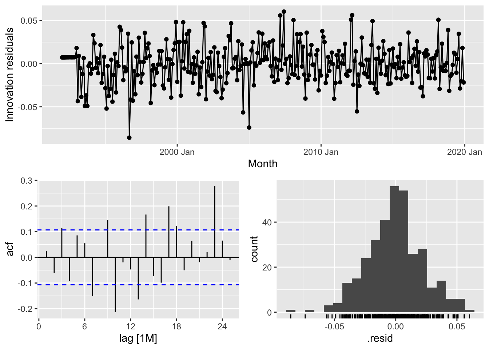

GitHub repo: https://github.com/rbaros001/ec522_ps4_baros.git
include plots, model reports, accuracy tables, DM test results, written answers to part 2


There appears to be a slight upward trend from January to December with the peak being in December and some small peaks in July and August. Over-time, consumption has increased as well to a higher sales level and following the same trend. The seasonal swings grow with the model which suggests that using logs reveals the true rates of changes and sales patterns.
Series: sales
Model: ARIMA(1,0,2)(2,1,1)[12] w/ drift
Transformation: log(sales)
Coefficients:
ar1 ma1 ma2 sar1 sar2 sma1 constant
0.8948 -0.7374 0.2477 0.3679 -0.2334 -0.8845 0.0036
s.e. 0.0355 0.0697 0.0623 0.0668 0.0665 0.0468 0.0001
sigma^2 estimated as 0.0005469: log likelihood=752.43
AIC=-1488.85 AICc=-1488.4 BIC=-1458.61Series: sales
Model: ETS(A,A,A)
Transformation: log(sales)
Smoothing parameters:
alpha = 0.3296099
beta = 0.007560263
gamma = 0.0001765132
Initial states:
l[0] b[0] s[0] s[-1] s[-2] s[-3] s[-4]
7.412219 0.0007608238 0.3263441 0.03153301 -0.004849389 -0.03530501 0.02512163
s[-5] s[-6] s[-7] s[-8] s[-9] s[-10] s[-11]
0.05558624 0.01219515 0.02503206 -0.06088935 -0.0607952 -0.1578065 -0.1561667
sigma^2: 7e-04
AIC AICc BIC
-489.1517 -487.2272 -424.2608 For the specifications for the ARIMA model were ARIMA(1,0,2)(2,1,1)[12] with drift. This tells us there was a seasonal difference at a lag of 12, indicating the series was differenced once against the same month from the previous year. The constant 0.0036, and total differencing d+D=1, this indicates a drift term. This indicates the year-over-year growth is trending upward over time.
The three letters indicate a Holt-Winters Additive model with additive error, additive trend, and additive seasonality. Additive error means random forecast errors are added directly to predicted level, trend, and seasonal components with assumed \(\sigma^2\) = 0.0007 across the log(sales) series. Additive trend means the slope is added to the level at each time step. We see that log(sales) is increasing at a constant amount each period, the original sales variable is increasing by a constant percentage over time. The smoothing parameter \(\beta\) = 0.0076 shows that the slope changes very slowly and remains nearly constant. Additive seasonality mean the seasonal effects are added to the level and trend, meaning there is a constant magnitude on log(sales). \(\gamma\) = 0.0002 indicates the seasonal pattern is practically fixed over time.

# A tibble: 1 × 3
.model lb_stat lb_pvalue
<chr> <dbl> <dbl>
1 arima 120. 0The high lb_stat means the model failed to capture all the underlying patterns, therefore the residuals do not reflect white noise.
There are 216 different forecast origins in this TS-CV.
| .model | RMSE | MAE |
|---|---|---|
| arima | 81.43 | 65.65 |
| ets | 94.35 | 72.31 |
| snaive | 161.26 | 136.63 |
The first and last forecasts for this are January 2002 to December 2019. The model that forecasts the most accurately is the ARIMA model. The ARIMA model wins for both the RMSE and MAE.
Diebold-Mariano Test
data: liquor_errs$arimaliquor_errs$ets
DM = -2.9062, Forecast horizon = 1, Loss function power = 2, p-value =
0.004042
alternative hypothesis: two.sidedThe DM statistic is -2.9062 with a p-value of 0.004042. We can reject the null hypothesis that arima and ets have euqual froecast accuracy. The DM test statistic tells us that the ARIMA model produces significantly more accurate one-step ahead forecasts.
table and written answers from part 3
RMSE table, DM test results, and written responses to part 4. report the numbers from saveRDS()
include plot, results, and written answers to part 5